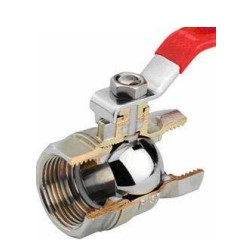

A ball valve is a shut off valve that controls the flow of a liquid or gas by means of a rotary ball with a bore. By rotating the ball a quarter turn (90 degrees) around its axis, the medium can flow through or is blocked.
In special versions, ball valves are also used as a control valve. This application is less common due to the relatively limited accuracy of controlling the flow rate in comparison with other types of control valves.
Similar in principle to the traditional ball valve, however, segmented ball valves have a V-shaped notch. A segmented ball valve has good flow rate control which depends on the ball rotation and increased performance with slurries.
Ball valves are actuated by quarter-turn, rotary actuators. This could be manual through the use of a hand-wheel or basic lever, or electric using a motor and gear box. Rotational actuation is also possible using pneumatic and hydraulic actuators. This could be a piston or a diaphragm connected to a rack and pinion or scotch yoke to convert linear to rotational motion.